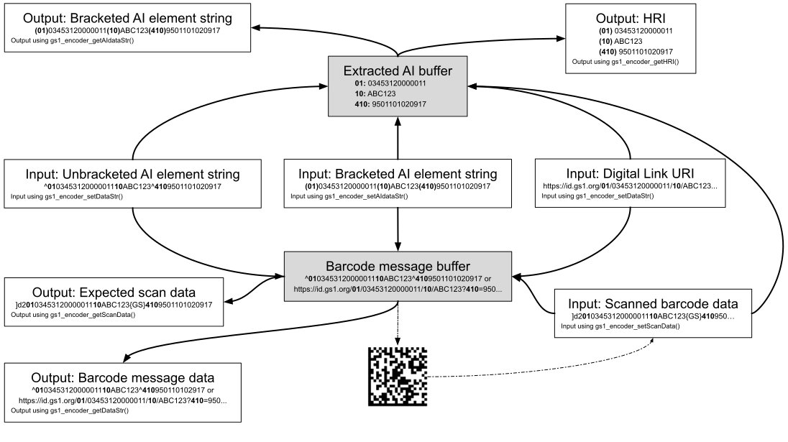

Namespace GS1.Encoders
GS1 Barcode Syntax Engine - C# wrapper.
The GS1 Barcode Syntax Engine provides routines that support the processing of GS1 syntax data, including Application Identifier element strings and GS1 Digital Link URIs, whether these are provided in raw or human-friendly format or as normalised scan data received from barcode readers.
The implementations are intended for use with GS1 standards and applications and do not contain additional features that might be required for more general use.
Within the GS1 Application Identifier system, structured data is represented in different formats depending upon the context.
The data formats supported by this library are:
- Bracketed AI element strings: Human-friendly rendition of AI data as a single string using numerical AIs.
- Unbracketed AI element strings: Rendition of AI data that corresponds most directly to encoded barcode data.
- GS1 Digital Link URIs
- Scan data: The expected result of scanning a symbol with a barcode reader that has AIM symbologies identifiers enabled.
- Human Readable Interpretation (HRI): Human-friendly redition of the AI data contained within a symbol. This may also include Data Titles to present the AI data in the form of "mixed HRI/non-HRI text". (Output only.)
The following diagram shows how the library can be used for processing and transformation of GS1 data, indicating which formats are accepted as input, how barcode message data is generated and AI data extracted from the provided input data, and how the given data can be output in various formats.

The above diagram highlights that conceptually the library contains two internal "data buffers":
- Barcode message buffer: This is populated with the raw message that would be borne by a GS1 barcode symbol that represents the input data, e.g. unbracketed AI syntax with FNC1 in first for regular AI element strings; plain string for a plain data or a GS1 Digital Link URI.
- Extracted AI buffer: This contains the in-order AI data that was extracted from the input data.
The main operations of the library involve reading and updating the state of these buffers.
Quick start
To use the library you must first build the native library and include the wrapper within your .NET project.
Building the native library
You must first build the native library by opening a Developer Command Prompt and running:
msbuild gs1encoders.sln /t:gs1encoders /p:Configuration=Release /p:Platform=x86
This will generate src\c-lib\build\library\Win32\Release\gs1encoders.dll.
Using the wrapper in your own project
To use the wrapper in your C# project you must:
- Include the wrapper source within your project
- Ensure
gs1encoders.dll(the native library) is in the same directory as your executable or in a location on your system PATH
For a minimal example, create a console application as follows:
dotnet new console -n MyApp -f net8.0
cd MyApp
Edit MyApp.csproj to include the wrapper source and deploy the native
library:
<Project Sdk="Microsoft.NET.Sdk">
<PropertyGroup>
<OutputType>Exe</OutputType>
<TargetFramework>net8.0</TargetFramework>
<PlatformTarget>x86</PlatformTarget>
</PropertyGroup>
<ItemGroup>
<Compile Include="<path\to\src\dotnet-lib\GS1Encoder.cs>" Link="GS1Encoder.cs" />
</ItemGroup>
<ItemGroup>
<None Include="<path\to\src\c-lib\build\library\Win32\Release\gs1encoders.dll>">
<CopyToOutputDirectory>PreserveNewest</CopyToOutputDirectory>
</None>
</ItemGroup>
</Project>
Edit Program.cs to contain:
using System;
using GS1.Encoders;
GS1Encoder gs = new GS1Encoder();
Console.WriteLine("GS1 Syntax Engine version: " + gs.Version);
Run your application:
dotnet run
For a comprehensive example WPF-based desktop application, see dotnet-app.
Example uses
The following are examples of how to use the library.
Unless otherwise specified, the getter properties return library-managed data that must not be modified by the user. If their content must persist following a subsequent call to the same instance of the library then they must be copied to a user-managed variable.
Most of the setter properties and action methods of this library throw exceptions in the event of failure. Production code should catch these exceptions and handle them appropriately, which might include rendering the error message to the user.
GS1 AI data validation and extraction (including GS1 Digital Link)
The following code processes AI data input, validates it (reporting any failures) and displays the extracted AIs if the validation succeeds.
GS1Encoder gs = new GS1Encoder(); // Create a new instance of the library
// gs.PermitUnknownAIs = true; // Uncomment only if it is necessary to handle AIs
// that are not known to the library
// Input provided as a bracketed AI element string
//
try
{
gs.AIdataStr = "(01)12312312312333(10)ABC123(99)TEST";
}
catch (Exception e)
{
Console.Error.WriteLine("ERROR: " + e.Message); // Display a descriptive error message
string errMarkup = gs.ErrMarkup;
if (!string.IsNullOrEmpty(errMarkup)) // Display the invalid AI in the case of a Linting failure
Console.Error.WriteLine("Bad AI data: " + errMarkup);
// Finally, handle the error in an application-specific way
Environment.Exit(1);
}
// Alternatively, the input may be given in the following formats:
//
// gs.DataStr = "^011231231231233310ABC123^99TEST"; // Unbracketed element string, "^" = FNC1
//
// gs.DataStr = "https://example.com/01/12312312312333/10/ABC123/99/TEST"; // GS1 Digital Link URI
//
// gs.ScanData = "]Q1011231231231233310ABC123\u001D99TEST"; // Barcode scan data, containing a "GS" (ASCII 0x1D) separator
foreach (string line in gs.HRI) // Display the extracted AI data as HRI text
{
Console.WriteLine(line);
}
Converting an AI element string to barcode message data
In this example we process a bracketed AI element string to convert it into barcode message data, suitable for carrying in a GS1 barcode symbol.
GS1Encoder gs = new GS1Encoder();
try
{
gs.AIdataStr = "(01)12312312312333(10)ABC123(99)TEST"; // Accept a bracketed AI element string
}
catch (Exception)
{
// Handle error and return
}
Console.WriteLine(gs.DataStr); // Render the barcode message buffer
Note: The barcode message data read and emitted by this library uses a harmonised format that does not concern itself with internal encoding quirks of various symbologies. In the harmonised barcode message data:
- A leading
"^"always indicates GS1 Application Identifier syntax data, i.e. a notional FNC1 in first character position. (This is even true for DotCode in whose internal encoding the literal FNC1 non-data character may have an inverted meaning for certain messages depending upon their regular data content.) - A
"^"at any other position represents a notional FNC1 non-data Application Identifier separator character. (This is even the case for QR Code in whose internal encoding a"%"character or"{GS}"character takes on the AI separator role typically assigned to the FNC1 non-data character, depending upon the effectuve encodation mode.)
Additionally, barcode image encoder libraries have differing conventions for how to input FNC1 characters, extending to whether it is necessary to be explicit about the notional FNC1 character in the first position when specifying a GS1 Application Identifier syntax symbol.
Consequently, the barcode message data emitted by this library may need to be post-processed to align to the specific requirements of whatever symbol generation library is in use.
Barcode scan data processing
In this example we process scan data from a barcode reader to extract the AI data.
GS1Encoder gs = new GS1Encoder();
// Disable validation of mandatory association between AIs if the symbol may
// be one of multiple on a label
gs.SetValidationEnabled(Validation.RequisiteAIs, false);
try
{
gs.ScanData = "]Q1011231231231233310ABC123\u001D99TEST";
}
catch (Exception)
{
// Handle error and return
}
foreach (string line in gs.HRI)
{
Console.WriteLine(line);
}
// If it is necessary to know the "symbology" that was scanned then this can
// be read using Sym, however note the caveats given in the
// description of ScanData
Note: It is required that AIM Symbology Identifiers are enabled on the barcode reader, and that the scanned barcode message "survives the channel" intact, i.e. that no character substitutions have been made by the reader, in particular that any embedded FNC1 separator characters are correctly represented by GS characters (ASCII 29). If this is not the case then the scanned data should be pre-processed to meet this requirement.
Classes
GS1Encoder
Main class for processing GS1 barcode data, including validation, format conversion, and generation of outputs such as GS1 Digital Link URIs and Human-Readable Interpretation text.
GS1EncoderDigitalLinkException
A custom exception class that is thrown to indicate an error processing GS1 Digital Link data.
GS1EncoderEncodeException
A custom exception class that is thrown to indicate a problem generating a barcode symbol.
GS1EncoderGeneralException
A custom exception class that is thrown to indicate a general problem initialising the library, such as when the dynamic-link library isn't accessible.
GS1EncoderParameterException
A custom exception class that is thrown to indicate a problem with barcode options that are being set.
GS1EncoderScanDataException
A custom exception class that is thrown to indicate an error processing barcode scan data.
Enums
GS1Encoder.Symbology
Recognised GS1 barcode formats ("symbologies") for processing scan data.
GS1Encoder.Validation
Optional AI validation procedures that may be applied to detect invalid inputs.